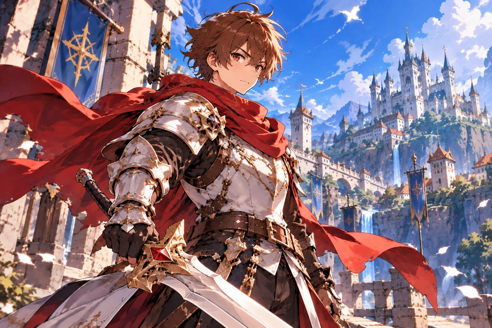

Sora
Main Protagonist Click to view profile- Age19 (spirit years)
- ClassKnight
- OriginTaddle Kingdom
- WeaponCelestial Sword
young knight with an unbreakable spirit, Sora sets out to protect his homeland and restore peace to the world.
HP70
ATK65
DEF50
SPD90